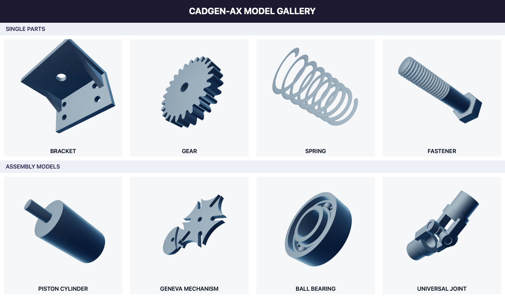
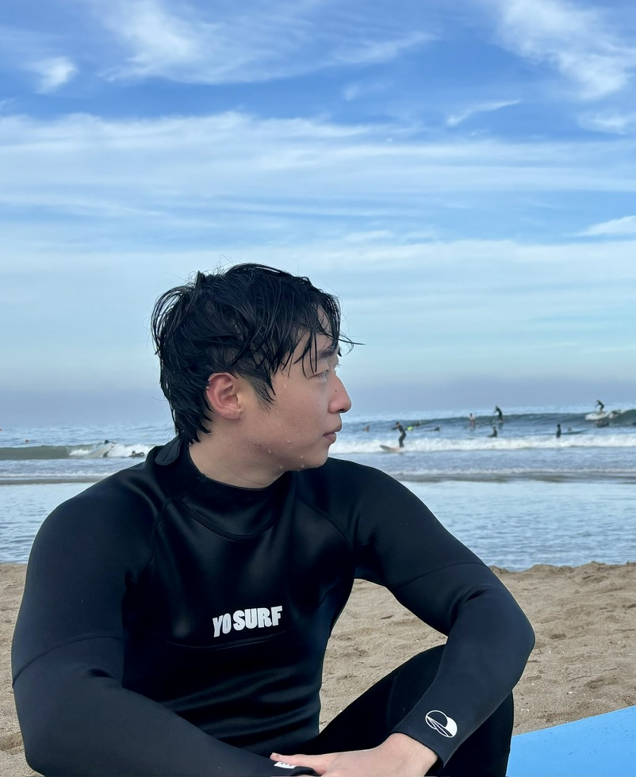

대표 프로젝트 · TEXT-TO-CAD
CADGen-AX
말로 설명한 아이디어를,
검토 가능한 3D 설계로.
자연어 요청을 OpenSCAD 코드와 3D 모델로 연결하는 AI 설계 도우미입니다. 구조·제조·시각 검증을 통해 결과를 확인하고, 실패 원인을 다음 설계에 반영합니다.
- 참여 역할
- System Engineer


CAD, AI & SYSTEMS
학부연구생
부산대학교 G&GP Lab에서 Text-to-CAD를 연구하고 있습니다.
다양한 분야에 걸친 문제에 대해, SW/AI 를 통한 해결 방안을 고민하는 것을 좋아합니다. 현재는 CAD와 AI 에이전트를 탐구하며, 제조 설계 자동화에 집중하고 있으며, 아이디어를 세상에 내놓기 위해 창업 준비에 몰두하고 있습니다.
프로젝트 살펴보기
01 / SELECTED WORK
메디컬, 금융, 제품 설계까지.
다양한 분야에 걸쳐 문제를 발견하고, 돌파구를 고민했습니다.
대표 프로젝트 · TEXT-TO-CAD
말로 설명한 아이디어를,
검토 가능한 3D 설계로.
자연어 요청을 OpenSCAD 코드와 3D 모델로 연결하는 AI 설계 도우미입니다. 구조·제조·시각 검증을 통해 결과를 확인하고, 실패 원인을 다음 설계에 반영합니다.

MULTI-AGENT SYSTEM
뉴스·공시 분석 에이전트와 시계열 이상 탐지를 결합한 주가조작 탐지 시스템.
DOCUMENT AI · RAG
파견 의료진을 위한 의료 논문 요약·검색 서비스. RAG 시스템 개발에 참여했습니다.
EMBEDDED SYSTEM
스마트 트레이 기반 간호 업무 비효율 개선 및 투약 오류 방지 프로젝트. 트레이 임베디드 시스템과 플러터 BLE 앱을 개발했습니다.
02 / PRACTICE & EXPERIENCE
기하와 데이터, 모델과 실행 사이.
서로 다른 기술이 만나는 지점에 관심이 있습니다.
CAD와 3D 데이터 처리에 관심을 두고 기하 컴퓨팅을 탐구합니다.
CAD / CAGD
Geometric processing
3D data
AI가 도구와 데이터를 활용하고, 실행 결과를 다음 판단으로 연결하는 과정을 다룹니다.
AI agents / RAG
Applied machine learning
Harness Engineering
역할과 책임을 명확하게 나누고, 입력부터 검증과 결과까지 이어지는 시스템을 지향합니다.
System design
Validation & traceability
End-to-end workflows
— 현재
학부연구생 · 기하 컴퓨팅 및 3D 데이터 처리
—
인턴십 · 항만 물류 데이터베이스 구축
03 / RECOGNITION
은상 (부산대학교 정보컴퓨터공학부장상)
창의상 (부산대학교 총장상)
우수상 (모두의 창업 2라운드 진출권)
대상 (부산대학교 총장상)
최우수상 (부산대학교 산학협력단장상)
UNIST, 울산시
부산대학교, Upstage
NHN
영천시
KB